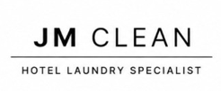

ABOUT US
JMclean을 소개합니다
(주)제이엠클린은 호텔에서 사용하는 침구류와 타월 등 린넨의 세탁 서비스를 제공하는 기업입니다. 호텔의 운영에 필요한 수거·세탁·납품 업무를 고객사와 협의해 진행합니다.
운영방향
청결한 세탁 품질, 원활한 소통, 고객사 일정에 맞춘 납품을 중요하게 생각합니다.

※ 이해를 돕기 위한 예시 이미지입니다. 실제 JMclean 공장 또는 거래처 사진이 아닙니다.

호텔 린넨 세탁을 위한 전문 서비스 파트너
(주)제이엠클린은 호텔에서 사용하는 침구류와 타월 등 린넨의 세탁 서비스를 제공하는 기업입니다. 호텔의 운영에 필요한 수거·세탁·납품 업무를 고객사와 협의해 진행합니다.
청결한 세탁 품질, 원활한 소통, 고객사 일정에 맞춘 납품을 중요하게 생각합니다.
※ 이해를 돕기 위한 예시 이미지입니다. 실제 JMclean 공장 또는 거래처 사진이 아닙니다.
회사명 (주)제이엠클린 / JMclean
대표자 정주원
사업자등록번호 128-87-23471
소재지 경기도 파주시 월롱면
대표 연락처 010-5656-6963
이메일 wn0504@nate.com
수거·납품 일정과 세탁 품목을 상담해 드립니다.